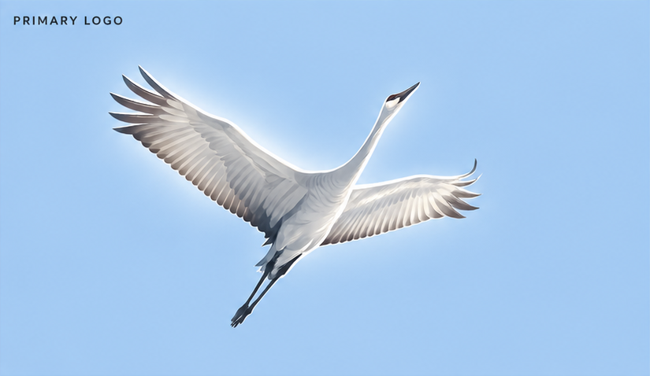

Blue Crane Browser is designed to disappear. The interface
never competes with the web — it simply carries you there.
Background tabs freeze after 90 seconds and unload
after 10 minutes, so a long session costs a fraction of the memory.
Change search engine